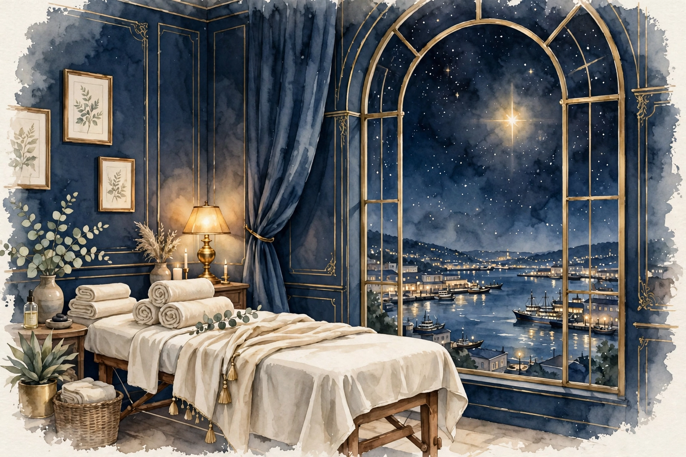
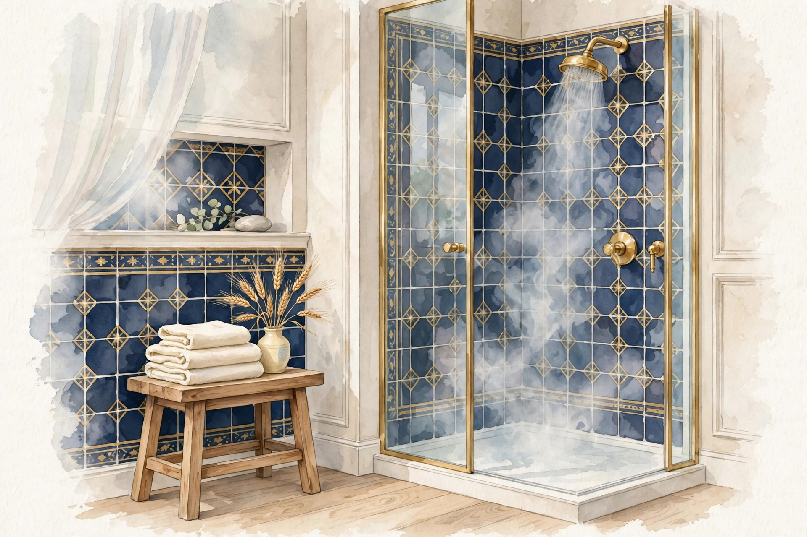

Oil Massage
オイルマッサージ
キャリアオイルを使い、全身を深い圧でゆったりとほぐすトリートメント。こりや張り、むくみ感、冷えなど、その日の状態に合わせて部位と圧を調整します。
- 背中・肩・首を中心とした深圧ケア
- 脚全体のむくみ感・重だるさケア
- 香りはアロマの系統からご相談できます
- 施術後はシャワーでオイルを洗い流せます
Kobe Sannomiya — Women Only
施術歴30年。東洋医学の知識と確かな手技で、仕事帰りの体と心に静かな休息を。神戸・三ノ宮のレンタルサロンで開く、完全予約制・女性専用のプライベートサロンです。当店では鍼灸施術は行わず、オイルマッサージと美容整体のみを行います。
※ 男性セラピスト1名が対応します。健全なリラクゼーションサロンです。施術後はシャワーでさっぱりとお帰りいただけます。詳しくは「安心への取り組み」をご覧ください。

Safety & Trust
男性セラピストのサロンだからこそ、不安に感じる点を先にすべて明記します。隠さないことが、当店の約束です。
当店はリラクゼーションを目的としたサロンです。性的なサービスは一切行いません。施術範囲は事前にご説明し、ご希望に沿わない部位には触れません。ご不安な点は、予約時・来店時のどちらでも遠慮なくお伝えください。
施術中は、施術部位以外を大きめのタオルでしっかり覆います。お着替えは施術者が席を外してから行っていただき、準備ができてから入室します。施術後のシャワーも、施術者が室外でお待ちする形でご利用いただけます。
施術は資格と経歴を公開した男性セラピスト1名のみが担当します。施術歴30年、鍼灸師（国家資格）をはじめ複数の専門資格を持ち、担当が日によって変わることはありません。誰が施術するのか分からない、という不安のない形にしています。
Self-Care Library
施術の合間にも、ご自宅で体をいたわるために。症状別のセルフケア資料をまとめた「セルフケア資料ライブラリ」を無料で公開しています。肩こり・むくみ・冷え・猫背など、気になる症状に合わせたケアの考え方や、自宅で無理なく続けられる方法を、どなたでも無料でお読みいただけます。
また、無料姿勢チェックの申込も、資料ライブラリから受け付けています。ご自身の写真をもとに姿勢の傾向を確認できるチェックですので、気になる方はあわせてご利用ください。
※ 資料は登録なしでお読みいただけます。無料姿勢チェックの申込方法も、ライブラリ内でご案内しています。
Oriental Medicine
当店の強みは、鍼灸師として学んできた東洋医学の体の見方です。鍼やお灸は使いませんが、その考え方をオイルマッサージと美容整体の組み立てに活かします。
東洋医学では、体のコンディションを「気・血・水（き・けつ・すい）」の巡りで捉えます。どれかひとつが滞ったり不足したりすると、こりや重だるさ、冷え、むくみ感といったサインとして表れやすいと考えられています。
施術ではまず、その日の体調やお悩み、生活の様子をうかがい、巡りのどこに負担がかかっていそうかを見立てます。そのうえで、圧の深さや施術の順番、重点的にほぐす部位を組み立てます。毎回同じ流れをなぞるのではなく、その日の体に合わせるのが当店の進め方です。
また、登録販売者・アロマセラピスト・パーソナルトレーナーの視点も加え、オイルの香りの選び方から、ご自宅で続けられる簡単なストレッチまで、日常に戻ってからも役立つケアをお伝えします。
東洋医学には、病気とまでは言えないけれど何となく調子が整わない状態を「未病」と呼び、その段階で体を整えることを大切にする考え方があります。「病院に行くほどではないけれど、疲れが抜けない」——そんなときにこそ、定期的なボディケアで自分の状態に目を向ける時間を持っていただければと思います。
体を動かし、温める力の源とされるもの。不足したり滞ったりすると、疲れやすさやだるさ、やる気の低下として感じやすいと考えられています。深い呼吸とゆったりした圧で、全身の巡りを意識した施術を行います。
全身に栄養を届ける流れのこと。滞るとこりや張り、冷えにつながりやすいとされます。オイルを使い、大きな筋肉から末端へ向けて丁寧にほぐしながら、巡りを意識して施術します。
体の中の水分のこと。滞るとむくみ感や重だるさとして感じやすいとされます。脚や腕を末端から中心へ向けて流す手技で、水分バランスと巡りを意識したケアを行います。
「スピカ（Spica）」はおとめ座で最も明るい一等星で、ラテン語で「麦の穂」を意味します。女神が手にする麦の穂の位置で輝くこの星は、古くから豊かさと実りの象徴とされてきました。
姉妹店・梅田の「ステラポラリス（北極星）」が道しるべの星なら、三ノ宮の「ステラスピカ」は実りの星。日々の仕事や家事で実を結んできた女性の体に、実りの休息を——そんな願いを込めています。施術後のシャワーでさっぱりと整えて、明日への一歩を軽くお帰りください。
Therapist
施術は、経歴を公開したセラピスト1名が最初から最後まで担当します。
男性セラピスト
ステラスピカ 施術担当
30YEARS OF EXPERIENCE
施術歴30年。鍼灸師としての東洋医学の知識を土台に、オイルマッサージと美容整体を組み合わせた施術を行います。当店では鍼灸施術は行いません。鍼やお灸を使わず、手技のみで体を整えます。
深く、しかし痛みを我慢させない圧の加減にこだわります。「強めが好き」「触れられたくない部位がある」など、ご希望は遠慮なくお伝えください。施術中いつでも調整します。
Menu & Price
メニューは2つだけ。どちらも90分・同料金で、シャワーのご利用も料金に含まれます。お悩みに合わせて組み合わせもできます。

90分10,000円（税込）
オイルマッサージ／美容整体とも同料金。シャワーのご利用は料金に含まれます。延長や追加料金のかかるオプションはありません。お支払い方法は予約確定時にご案内します。
開院後に受付開始近日開院予定：近日開院予定のため、ご予約の受付はまだ開始していません。受付開始はこのページでご案内します。
Shower Room
ステラスピカ（三ノ宮）はシャワー完備のサロンです。オイルを洗い流してからお帰りいただけるので、そのままお食事やお出かけにも向かえます。

オイルマッサージのあと、「ベタついたまま帰るのはちょっと…」という声は少なくありません。当店では施術の前後どちらでもシャワーをご利用いただけます。追加料金はかかりません。
シャワー中、施術者は室外でお待ちします。お一人だけの空間で、ゆっくりとご利用ください。
Flow
ご予約からお帰りまで、6つのステップでご案内します。
開院後のご予約は、予約フォームのメモ、またはLINE公式アカウント・SMSからご希望日時をお知らせください。詳しい場所は予約確定後にご案内します。
その日の体調や気になるお悩み、触れてほしくない部位、圧のご希望をうかがいます。初めての方も、ここで不安な点をお聞かせください。
施術者が席を外したうえでお着替えいただきます。ご希望の方は、施術前にシャワーでひと浴びも可能です。
カウンセリングをもとに組み立てた内容で施術します。圧の強さはいつでも調整できますので、遠慮なくお声がけください。
施術後はシャワーでオイルを洗い流し、さっぱりとお着替えいただけます。施術者は室外でお待ちします。
体の状態と、ご自宅でできるセルフケアをお伝えします。水分をとって、ゆっくりお帰りください。
Care Guide
気になるお悩みから、東洋医学の見立て・おすすめ施術・セルフケアをまとめた専用ページへ進めます。全21件。
該当するお悩みが見つかりませんでした。キーワードを変えてお試しください。
Meridian Guide
東洋医学で体の巡りの通り道とされる「経絡」。正経十二経脈と奇経八脈、全20経絡を1つずつ解説します。気になる経絡を選んでください。
五臓六腑とつながる、巡りの主要な12本の通り道です。
十二経脈の巡りを調整する、8本の通り道です。
Blog
セルフケアや東洋医学の考え方、美容ケアのヒントを、施術者の視点でお届けします。
English Guide — Stella Spica, Sannomiya, Kobe
Stella Spica is a women-only, appointment-only private salon in the Sannomiya area of Kobe, Japan. We offer oil massage and beauty seitai (posture care) in a private room with a shower, so you can rinse off the oil and freshen up after your session.
Your therapist is one male practitioner with 30 years of experience, holding a Japanese national licence in acupuncture and moxibustion, plus qualifications in aromatherapy, personal training, and registered pharmaceutical sales. No acupuncture is performed at this salon — treatments are hands-on only.
90 minutes — ¥10,000 (oil massage or beauty seitai; shower use included). Open Monday to Saturday, 17:00–22:00. Closed Sundays. By appointment only.
This is a wholesome relaxation salon. No sexual services are offered under any circumstances. During treatment, all areas except the one being treated are covered with large towels. The exact address (a rental salon in Sannomiya) is provided after your booking is confirmed.
Can I shower after the treatment? Yes — the salon has a shower, and it is included in the price.
Is English spoken? Simple English is fine; please write short, clear messages when booking.
What should I bring? Nothing in particular — towels are provided.
FAQ
はい、シャワー完備です。施術の前後どちらでもご利用いただけ、追加料金はかかりません。バスタオル・フェイスタオルもご用意しますので、手ぶらでお越しいただけます。
ご不安は自然なことだと思います。当店では、施術範囲の事前説明、施術部位以外へのタオル掛け、お着替え・シャワー時の退室を徹底しています。性的なサービスは一切行いません。少しでも不安な点は、ご予約時にご相談ください。
当店では鍼灸施術は行いません。セラピストは鍼灸師の国家資格を持ちますが、施術はオイルマッサージと美容整体（手技）のみです。東洋医学の知識は、施術の組み立てに活かしています。
神戸・三ノ宮エリアのレンタルサロンで施術します。プライバシーと安全のため、詳しい住所はご予約確定後にご案内します。各線三宮駅・三ノ宮駅から徒歩圏内です。
空きがあれば可能です。完全予約制のため、事前のご予約をおすすめします。希望日が近い場合は、その旨をメモにお書きください。
体調や時期によって対応が異なります。安全のため、ご予約時に必ずお知らせください。施術をお受けできない場合もありますが、まずはご相談ください。
梅田の姉妹店「ステラポラリス」と施術内容・料金・営業時間は同じです。ステラスピカ（三ノ宮）の特徴は、シャワー完備のサロンであることです。神戸方面の方はこちらが便利です。
Salon Info
| 店名 | ステラスピカ（Stella Spica） |
|---|---|
| エリア | 神戸・三ノ宮エリア（レンタルサロン） ※ 詳しい住所は予約確定後にご案内します |
| アクセス | 各線 三宮駅・三ノ宮駅から徒歩圏内 |
| 営業時間 | 月〜土 17:00〜22:00（日曜休み） |
| 予約 | 完全予約制／女性専用 |
| 設備 | シャワー完備・完全個室・タオル完備 |
| 料金 | 90分 10,000円（税込）／シャワー利用込み |
| 施術 | オイルマッサージ／美容整体（鍼灸施術は行いません） |
Sister Salon — Umeda, Osaka
大阪・梅田の姉妹店「ステラポラリス」。施術内容・料金・営業時間は同じです。大阪方面の方は梅田店、神戸方面の方は三ノ宮のステラスピカと、ご都合に合わせてお選びください。
※ 梅田店はシャワーのご用意がありません。シャワーをご希望の方は三ノ宮のステラスピカへどうぞ。
Recruit
ステラスピカでは、業務委託で施術を担当してくださるセラピストを募集しています。未経験の方には無料の研修を、経験者の方にはお持ちの技術をそのまま活かせるメニュー化の仕組みをご用意します。
雇用契約ではなく、業務委託での募集です。報酬は施術料の60%。働く曜日・時間帯は、本人の希望に合わせて設定できます。自分のペースを大切にしながら、サロンのセラピストとして施術を担当していただきます。
施術未経験の方には、デビューまでの研修を無料でご用意しています。基礎から順に学べるので、初めての方も安心してスタートできます。
経験者の方は、すでにお持ちの技術をそのまま当店のメニューとして提供できます。あなたの得意な手技を活かして、お客様にご案内しましょう。
※ 研修内容は一例です。経験や進み具合に合わせて、進め方は面談時にご相談します。
※ お持ちの技術・資格をお聞かせください。内容を確認のうえ、当店のメニューとしてご案内できる形を一緒に考えます。上記以外の技術もご相談ください。
下の応募フォームで応募文を作り、LINE公式アカウント／SMSでお送りください。
ご希望の働き方をうかがい、業務の詳細条件をご案内します。疑問点は遠慮なくご質問ください。
未経験の方は無料研修へ。経験者の方は技術の確認と、メニュー化の内容を相談します。
条件にご納得いただけましたら、業務委託契約を結びます。
ステラスピカのセラピストとして、施術をスタートしていただきます。
入力すると応募文が自動で作られます。文面をコピーして、LINE公式アカウント／SMSへお送りください。報酬は施術料の60%です。そのほかの詳細な業務条件は、面談時にご案内します。
※ 当店は健全なリラクゼーションサロンです。性的なサービスは一切行いません。この方針にご同意いただける方のみご応募ください。
Booking
近日開院予定のため、ご予約の受付はまだ開始していません。受付開始はこのページでご案内します。開院後のご予約は、LINE公式アカウントまたはSMSでの受付を予定しています。下のフォームで、開院後の予約メモの文面イメージをご確認いただけます。
※ 予約ボタン先（LINE公式アカウント／SMS）の詳細は、予約確定のご連絡時にご案内する形を基本としています。お急ぎの方は、希望日時とお悩みをメモに明記ください。
当店の施術はリラクゼーションを目的としたもので、医療行為ではありません。症状の診断・治療については医療機関にご相談ください。痛みやしびれが強い場合、発熱時、飲酒後、妊娠中の方（時期による）は、施術をお断りする場合があります。
性的なサービスは一切行いません。そのような要求があった場合、施術を中止し、今後のご利用をお断りします。
当店では鍼灸施術は行いません。掲載している経絡・ツボ・東洋医学の内容は、一般的な考え方の紹介です。